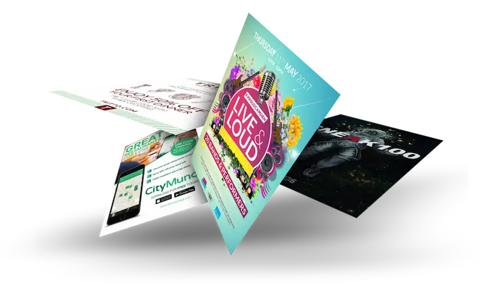

Введение
В современном мире цифровых технологий многие предприятия сосредотачиваются на онлайн-рекламе, забывая о проверенных временем инструментах. Однако именно полиграфия продолжает демонстрировать удивительную эффективность в привлечении клиентов и увеличении продаж. Качественные печатные материалы не просто несут информацию — они создают тактильный контакт с брендом, вызывают эмоциональный отклик и надолго остаются в памяти потенциальных клиентов.
В эпоху цифровых технологий печатная продукция продолжает оставаться эффективным инструментом продвижения. Вот ключевые преимущества, которые делают её незаменимой:
Брошюры, каталоги и визитки можно подержать в руках, что создает более глубокое эмоциональное взаимодействие с брендом. Человеческий мозг лучше запоминает информацию, полученную через несколько каналов восприятия одновременно. Печатные материалы дольше остаются в поле зрения клиента compared to мимолетным цифровым впечатлениям — их можно положить на стол, повесить на стену или передать коллеге.
Качественная полиграфия ассоциируется с надежностью и стабильностью компании. Согласно исследованиям, 56% потребителей считают печатную рекламу более достоверной, чем цифровую. Тщательно продуманный каталог или брошюра свидетельствуют о серьезности намерений компании и ее готовности инвестировать в свой имидж.
Можно точно определить целевую аудиторию и географию распространения. Листовки и флаеры эффективны для локального продвижения — они попадают именно в те руки, которые нужны бизнесу. Современные технологии персонализации позволяют создавать материалы, ориентированные на конкретного получателя, что значительно повышает конверсию.
Печатные материалы живут дольше цифровых сообщений. Журнал может месяцами лежать на столе, каталог передаваться из рук в руки, а фирменный пакет использоваться многократно. Это обеспечивает многократные контакты с брендом без дополнительных инвестиций.
Недавно мы реализовали проект для сети кофеен:
Результат: +25% к повторным продажам и +15% к среднему чеку в течение трех месяцев после запуска кампании. Клиенты отмечали, что коллекционные открытки стали дополнительным стимулом для посещения кофейни.
Современный подход предполагает не выбор между digital и print, а их гармоничное сочетание:
Заключение
Полиграфия остается мощным инструментом в арсенале современного маркетолога. Она дополняет цифровые каналы коммуникации, обеспечивает физическое присутствие бренда в жизни клиента и создает эмоциональную связь, которую трудно достичь другими средствами. Правильно подобранные печатные материалы не только увеличивают продажи, но и укрепляют лояльность клиентов, создавая прочную основу для долгосрочных отношений.
Хотите также увеличить продажи с помощью полиграфии?
Наши специалисты разработают эффективное полиграфическое решение именно для вашего бизнеса!
Печатаем результаты, а не просто материалы!
P.S. Закажите пробную партию полиграфии до конца месяца и получите скидку 15% на дизайн-макеты!